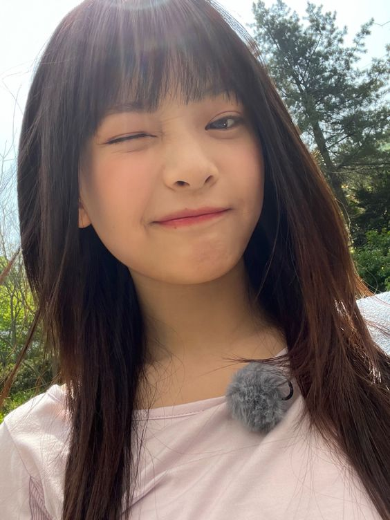
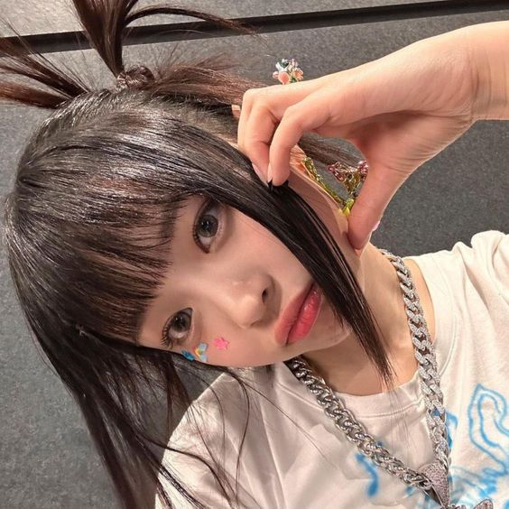

Stage Name: Hanni (하니)
Birth Name: Hanni Pham
Vietnamese Name: Phạm Ngọc Hân
Birthday: October 6, 2004
Zodiac Sign: Libra
Chinese Zodiac Sign: Monkey
Height: 161.7 cm (5’3”)
Weight: –
Blood Type: O
MBTI Type: INFP
Nationality: Vietnamese-Australian
Hanni Facts:
- Hanni has a younger sister named Jasmine (born in 2007).
- Hanni speaks Vietnamese, English, and Korean.
- She was a part of the dance crew AEMINA Dance Crew based in Melbourne.
- Fans nicknamed her Cherry ever she appeared in the “Permission To Dance” music video since at the time no one knew her name.
- Hanni trained for 2 and a half years since 2020, but she passed the Big Hit Global Audition in October 2019.
- She was a fan of One Direction when she was younger.
- Her favorite movie genres are action and animated films.
- Hanni plays the ukelele, and she started playing it after learning how to during music class in elementary school.
- She loves bread so much she might as well introduce herself as “I’m a person that loves bread sold on airplanes.”
Gallery
